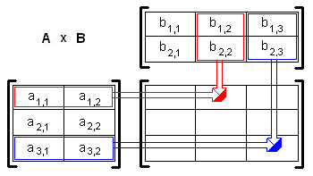

Matrice. Operaţii cu matrice: adunare, înmulţire. Reprezentarea în memorie.
Responsabil: Andrei Pârvu
Obiective
În urma parcurgerii acestui laborator studentul va fi capabil:
- să declare matrice si orice fel de tablou multidimensional;
- sa initializeze aceste structuri, atat din declaratie, cat si prin instructiuni iterative;
- sa cunoasca regulile de reprezentare ale tablourilor in memorie si sa inteleaga modul in care compilatorul interpreteaza operatorii de indexare;
- sa cunoasca scheme comune de utilizare a acestor structuri;
- sa foloseasca practici recunoscute si recomandate pentru scrierea de cod sursa care implica lucrul cu matrice;
- sa recunoasca si sa evite erorile comune de programare legate de aceste structuri
Noţiuni teoretice
Matrice
Matricea este o colecţie omogenă şi bidimensională de elemente. Acestea pot fi accesate prin intermediul a doi indici, numerotaţi, ca şi în cazul vectorilor, începand de la 0. Declaraţia unei matrice este de forma:
<tip_elemente> <nume_matrice>[<dim_1>][<dim_2>];
De exemplu, avem:
int mat[5][10];
#define MAX_ELEM 100 float a[MAX_ELEM][MAX_ELEM];
Numărul de elemente ale unei matrice va fi dim_1*dim_2, şi semnificaţia fiecărei dimensiuni este o chestiune ce ţine de logica programului. În matematică, prima dimensiune poate să însemne linia şi a doua coloana pentru fiecare element, însa acest lucru nu este obligatoriu. Este necesar totuşi, pentru funcţionarea corectă a programului, să se respecte semnificaţiile alese pe întreg parcursul codului sursă.
Tablouri multidimensionale
Vectorii şi matricele se pot extrapola la noţiunea generală de tablou cu mai multe dimensiuni, care se declară în modul următor:
<tip_elemente> <nume_tablou>[<dim_1>][<dim_2>]...[<dim_n>];
De exemplu:
int cube[3][3][3];
Deşi, în cazul a mai mult de 3 dimensiuni, tablourile pot să nu mai aibă sens concret sau fizic, acestea pot fi deosebit de utile în multe situaţii. În acest laborator ne vom rezuma totuşi la tablouri bidimensionale.
Adunarea si înmulţirea matricelor
Suma matricelor
Fie $A \in {\mathbb R}^{m \times n}$, $B \in {\mathbb R}^{m \times n}$, atunci $(A+B) \in {\mathbb R}^{m \times n}$, unde: $(A+B)_{i,j} = A_{i,j} + B_{i,j}$

Exemplu:
$$ \Large \begin{bmatrix} 1 & 3 \\ 0 & 4 \\ 5 & 8 \end{bmatrix} + \begin{bmatrix} 2 & 5 \\ 1 & 2 \\ 6 & 1 \end{bmatrix} = \begin{bmatrix} 3 & 8 \\ 1 & 6 \\ 11 & 9 \end{bmatrix} $$
Înmulţirea matricelor
Fie $A \in {\mathbb R}^{m \times n}$, $B \in {\mathbb R}^{n \times p}$, atunci $(AB) \in {\mathbb R}^{m \times p}$, unde elementele $A.B$ sunt date de formula: $(AB)_{i,j} = \sum_{r=1}^n A_{i,r}B_{r,j}$
 Exemplul din stânga prezintă cum se calculează valorile (1,2) si (3,3) ale 'AB' daca 'A' este o matrice 3×2, si 'B' o matrice 2×3. Pentru calculul unui element din matrice se consideră o linie respectiv o coloană din fiecare matrice conform săgeţilor. Elementele din acestea sunt înmulţite câte 2 conform înmulţirii pe vectori, apoi suma produselor constituie elementul din matricea finală
{kind=link}
$$ (\mathbf{AB})_{1,2} = \sum_{r=1}^2 a_{1,r}b_{r,2} = a_{1,1}b_{1,2}+a_{1,2}b_{2,2} \\ (\mathbf{AB})_{3,3} = \sum_{r=1}^2 a_{3,r}b_{r,3} = a_{3,1}b_{1,3}+a_{3,2}b_{2,3} $$
Exemplu:
$$ \Large \begin{bmatrix} 1 & 0 & 2 \\ -1 & 3 & 1 \end{bmatrix} \cdot \begin{bmatrix} 3 & 1 \\ 2 & 1 \\ 1 & 0 \end{bmatrix} = \begin{bmatrix} 1 \times 3 + 0 \times 2 + 2 \times 1 & 1 \times 1 + 0 \times 1 + 2 \times 0 \\ -1 \times 3 + 3 \times 2 + 1 \times 1 & -1 \times 1 + 3 \times 1 + 1 \times 0 \end{bmatrix} = \begin{bmatrix} 5 & 1 \\ 4 & 2 \end{bmatrix} $$
Reprezentarea în memorie
Cunoaşterea reprezentării în memorie a tablourilor vă ajută să înţelegeţi mai bine cum se lucrează cu aceste tipuri de date şi să evitaţi atât erorile comune, cât şi pe cele mai subtile. Aşa cum se ştie, fiecare variabilă are asociata o anumită adresă în memorie şi ocupă o anumită lungime, măsurată în octeţi. Standardul C impune ca un tablou să fie memorat într-o zonă continuă de memorie, astfel ca pentru un tabloul de forma: T tab[dim1][dim2]…[dimn];
dimensiunea ocupată în memorie va fi sizeof(T)*dim1*dim2*…*dimn. Vom considera în continuare cazul particular al unui vector vect de lungime n, şi al unui element oarecare al acestuia, de pe pozitia i.
Atunci când întalneşte numele vect, compilatorul va intelege “adresa în memorie de la care începe vectorul vect”. Operatorul de indexare [] aplicat numelui vect instruieşte compilatorul să “evalueze acel element de tipul T, care se află pe pozitia i în vectorul care începe de la adresa vect”. Acest lucru se poate exprima direct: “evaluarea variabilei de tip T de la adresa vect + i * sizeof(T)”.
În ultima formulare observaţi ca nu mai intervine sub nici o formă dimensiunea vectorului dată la declarare. Aceea a fost necesară doar compilatorului, ca sa ştie câtă memorie să aloce pentru reprezentarea acestuia. De asemenea, observaţi că sunt permise indexari în afara spaţiului de memorie alocat, şi astfel programul va putea, din greşeala, accesa alte zone de memorie, lucru care poate avea repercursiuni grave. În cel mai bun caz programul nostru se va comporta foarte ciudat (erori în locuri total imprevizibile), şi în cel mai rău caz întreg sistemul va fi blocat (în cazul sistemelor care nu au implementate spaţii virtuale de memorie proprii fiecărei aplicaţii - platformele Windows NT si Linux).
Faptul că graniţa dintre vectori şi adrese de memorie este atât de fină în limbajul C, sintaxa acestuia permite expresii ciudate, de forma:
char a[100]; a[0] = 1; 3[a] = 5;
Instrucţiunea din urmă înseamna pur şi simplu “asignează 5 variabilei de tip char de la adresa 3 + a * sizeof(char) = 3 + a”. Observaţi că aceasta este echivalentă cu a[3] = 5;
De asemenea, un alt avantaj apare la definirea unui parametru al unei funcţii, de tip vector, caz în care nu este necesară precizarea dimensiunii acestuia: void sort(int[] vect, n);
Este de remarcat faptul că pentru tablouri de dimensiuni m > 1, este necesară precizarea lungimilor primelor m - 1 dimensiuni, pentru ca compilatorul să poată calcula adresa fiecărui element atunci când acesta este referit în program. Mai multe detalii legate de reprezentarea tablourilor şi, în general, a datelor în memorie, vor fi date în laboratorul urmator.
Exemple de programe
- Declararea unei matrici unitate:
#define M 20 /* nr maxim de linii si de coloane */ int main() { float unit[M][M]; int i,j,n; printf("nr.linii/coloane: "); scanf("%d", &n); if (n > M) { return; } for (i = 0; i < n; i++) { for (j = 0; j < n; j++) { if (i != j) { unit[i][j]=0; } else { unit[i][j]=1; } } } return 0; }
- Citire/scriere de matrice de reali:
int main() { int nl, nc, i, j; float a[20][20]; /* Citire de matrice */ printf("nr.linii: "); scanf("%d", &nl); printf("nr.coloane: "); scanf("%d", &nc); if (nl > 20 || nc > 20) { printf("Eroare: dimensiuni > 20 \n"); return ; } for (i = 0; i < nl; i++) { for (j = 0; j < nc; j++) { scanf("%f", &a[i][j]); } } /* Afisare matrice */ for (i = 0; i < nl; i++) { for (j = 0; j < nc; j++) { printf("%f ",a[i][j]); } printf ("\n"); } return 0; }
Erori comune
- Inversarea indicilor pentru elementele unei matrice sau tablou. E usor sa-l inversezi pe i cu j in expresia A[i][j] astfel ca trebuie sa fiti atenti cand scrieti astfel de cod. Luati in considerare si folosirea de nume mai sugestive pentru variabile.
Referinţe
Exerciții Laborator CB/CD
Primul exercitiu presupune modificarea/adaugarea de instructiuni unui cod existent pentru a realiza anumite lucruri. In momentul actual programul realizeaza transpunerea unei matrice patratice primite ca parametru. Se afiseaza atat matricea initiala, cat si matricea transpusa.
- Nu uitati ca trebuie sa utilizam un coding style adecvat atunci cand scriem sursele.
- ex1.c
#include <stdio.h> #define N 100 void transpose_matrix(int m[N][N], int n) { int i, j, tmp; for (i = 0; i < n; i++) { for (j = i + 1; j < n; j++) { tmp = m[i][j]; m[i][j] = m[j][i]; m[j][i] = tmp; } } } void print_matrix(int m[N][N], int n) { int i, j; for (i = 0; i < n; i++) { for (j = 0; j < n; j++) { printf("%d ", m[i][j]); } printf("\n"); } printf("\n"); } int main(void) { int i, n = 3; int V[N][N] = { {1, 2, 3}, {4, 5, 6}, {7, 8, 9} }; print_matrix(V, n); transpose_matrix(V, n); print_matrix(V, n); return 0; }
Cerinte:
- Realizati citirea unei matrice patratice de la tastatura - se va suprascrie n.
- Realizati suma elementelor de deasupra diagonalei principale.
- Afisati elementele de sub diagonala secundara. In locul elementelor de deasupra diagonalei secundare se va afisa 0.
Următoarele două probleme vă vor fi date de asistent în cadrul laboratorului.
Exerciții de Laborator seria CB
- [2p] Următorul program ar trebui să citească și să afișeze o matrice. Compilați și rulați.
- matrix.c
#include <stdio.h> #define MAX 100 void read_matrix(int a[MAX][MAX], int n) { int i, j; scanf("%d", &n); for (i = 0; i < n; i++) for (j = 0; j < n; j++) scanf("%d", &a[i][j]); } int main(void) { int a[MAX][MAX], n = 1, i, j; read_matrix(a, n); for(i = 0; i < n; i++) { for (j = 0; j < n; j++) printf("%d ", a[i][j]); printf("\n"); } return 0; }
- ce observați?
- folosind printf, afișați după apelul
read_matrixvaloarea luinși a luia[0][0] - identificați problema
- rezolvați problema
- [3p] Următorul program inversează elementele unui vector. Compilați și rulați.
- swap.c
#include <stdio.h> #define MAX 100 void magic(int a[MAX], int n) { int i; for (i = 0; i < n; i++) a[i] = a[i] & (~(0x01 & 0x42)); for (i = 0; i < n/2; i++) { a[i] = a[i] ^ a[n - i]; a[n - i] = a[i] ^ a[n - i]; a[i] = a[i] ^ a[n - i]; } for (i = 0; i < n; i++); a[i] = a[i] & (~(0x42 & 0x101)); } int main(void) { int a[MAX], n, i; for (i = 0; i < n; i++) { scanf("%d", &a[i]); } magic(a, n); for (i = 0; i < n; i++); { printf("%d ", a[i]); } return 0; }
- folosiți gdb pentru a identifica și rezolvați problemele
- Scrieţi un program pentru înmulţirea a două matrice, dacă aceasta este posibilă. Va trebui să implementaţi două funcţii:
- [1p] una pentru citirea unei matrice într-un tablou bidimensional, dat ca parametru.
- [2.5p] una care să realizeze efectiv înmulţirea a două matrice.
- [1.5p] Scrieţi un program care ridică o matrice patratică cu n linii şi n coloane la puterea p, cu p număr întreg pozitiv.
Exerciţii de Laborator
- Scrieţi un program pentru înmulţirea a două matrice, dacă aceasta este posibilă. Va trebui să implementaţi două funcţii:
- [1p] una pentru citirea unei matrice într-un tablou bidimensional, dat ca parametru.
- [2.5p] una care să realizeze efectiv înmulţirea a două matrice.
- [1.5p] Scrieţi un program care ridică o matrice patratică cu n linii şi n coloane la puterea p, cu p număr întreg pozitiv.
- [2p] Scrieți un program care citeste o matrice si indicele unei coloane a acesteia și afișează cele două diagonale care pornesc de pe linia 0 și indicele coloanei respective. Valorile elementelor aflate pe diagonale vor fi inlocuite cu 0.
Exemplu:3 4 1 1 2 3 4 3 4 5 6 6 7 8 9 1 0 3 4 3 4 0 6 6 7 8 0 1 0 3 4 0 4 5 6 6 7 8 9
- [3p] Fie două matrice $A$ si $B$. Să se afișeze toate perechile $(A', B')$, unde $A'$ este submatrice a lui $A$ și $B'$ este submatrice a lui $B$, în care suma elementelor din $A'$ este egală cu suma elementelor din $B'$. Submatricele $A'$ si $B'$ trebuie să aibă cel puțin 2 linii și 2 coloane.
Exemplu:3 4 // matricea A 3 2 1 3 6 5 2 3 5 3 2 1 4 3 // matricea B 2 3 3 4 1 2 5 3 2 2 7 6 // Rezultat sub forma (linie stanga sus, coloana stanga sus, linie dreapta jos, coloana dreapta jos) (0, 0, 1, 3), (0, 0, 2, 2) (0, 0, 1, 3), (2, 0, 3, 2) (0, 1, 1, 2), (0, 0, 1, 1) (0, 1, 2, 2), (0, 0, 1, 2) (0, 1, 2, 3), (1, 0, 3, 1) (0, 2, 1, 3), (0, 1, 1, 2) (1, 0, 2, 3), (0, 0, 3, 1) (1, 0, 2, 3), (0, 1, 3, 2) (1, 2, 2, 3), (1, 1, 2, 2)
BONUS:
- [2p] Dându-se o matrice $A$ de dimensiune $N * M$ să se sorteze diagonalele acesteia, utilizând un algoritm de bubble-sort.
Exemplu:4 3 5 6 3 3 4 5 2 7 4 5 1 1 // Rezultat 4 5 3 1 4 6 1 3 5 5 2 7